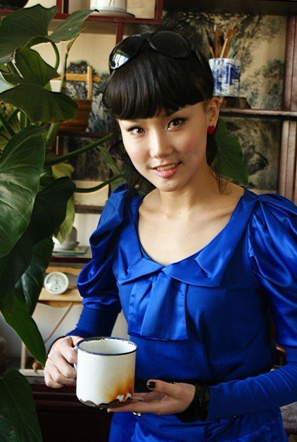
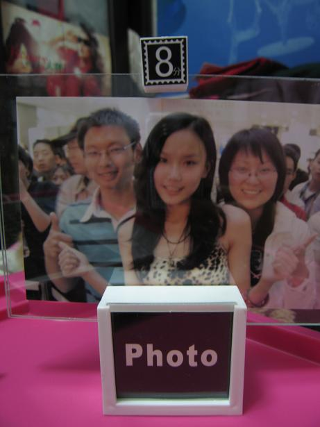

就像我在参加一个品牌的发布会的时候，由于品牌方和另外一组艺人的沟通问题，我在休息室苦等了5个小时。我也认为，这是品牌方给我的一个考验，让我有耐心，不能急躁。所以今年我依然是品牌方的代言人。

那是在北方的冬天，非常非常的冷，我穿着漂亮但是非常单薄的bread n butter的衣服。幸好阳光好，休息室其实是一个校长的办公室，里面喂了鸟和种了鱼，跑来跑去的通告中，可以静下心来和这些小动物们接触，也算是很美的一件事情。
2月3日举办了歌迷会，也是大家为我提早过生日，虽然我觉得 “谢谢”这两个字太轻了，但我还是要先说一下，感谢天韵阁的同胞们为我策划的歌迷会！感谢那天晚上到场的认识和新认识的，还有提供场地的G house和一些赞助商，最重要的就是感谢我的龄铛们。。。宝宝飞飞，无月，JELLY。。。有几个名字记不得了，对不起啊，还有来不了的铃铛，感谢你们为我所以做的一切，我有时候会去贴吧什么的看到你们的留言，那么晚还为我发照片什么的。。。太多了，有时候工作人员跑来和我讲你们做了什么，但还有很多很多是我看不到的，所以真的谢谢大家默默的为我付出。。。
这是2月3日的歌迷会龄铛恋人送给我的礼物，飞飞和宝宝，09年5月1日他们来看我演出时照的，那天是宝宝的生日，10年的2月3日你们将它制作成礼物送给我，照片后还写了永远支持我之类的话，最后标上的日期是2月1日，那天是我爸爸的生日哦，哈，还写了一封很长很长我一辈子也写不了那么长的信给我，好温暖的，飞飞还是那样可爱，宝宝有变哦，照片上的你还是学生的感觉，但那天一开始真没有认出你，变成爱打扮漂亮女生咯，感觉到你的女人味。保持幸福哦
